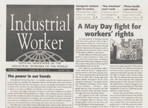

Submitted on Tue, 05/30/2006 - 2:49am
This story was psoted after May 20th, so the tense doesn't agree with the date of the posting. We will bring more news about this campaign as it develops.
 TORONTO – Members of the Toronto branch of the Industrial Workers of the World (IWW) are pleased to announce a recruitment drive in several targeted workplaces in the city’s service and retail sectors. The IWW will kick off this campaign on May 20 with a public event at 18 Eastern Ave. (lower level), at 7 pm, featuring a presentation by Tomer Malchi. Malchi is involved in the union’s highly publicized organizing initiative at Starbucks coffee shops in New York City. On May 21, Malchi will lead an organizing workshop for interested participants.
TORONTO – Members of the Toronto branch of the Industrial Workers of the World (IWW) are pleased to announce a recruitment drive in several targeted workplaces in the city’s service and retail sectors. The IWW will kick off this campaign on May 20 with a public event at 18 Eastern Ave. (lower level), at 7 pm, featuring a presentation by Tomer Malchi. Malchi is involved in the union’s highly publicized organizing initiative at Starbucks coffee shops in New York City. On May 21, Malchi will lead an organizing workshop for interested participants.
The Cincinnati-headquartered IWW, which celebrated its 100th anniversary in 2005, is presently at its highest membership level since the 1940s, having recently enjoyed recruitment successes in, among other areas of the economy, New York food services and the California trucking industry. The union’s Toronto branch was re-established in the summer of last year.
While supportive of other trade unions, the IWW – informally known as the Wobblies – differs from mainstream organizations in its emphasis on rank-and-file initiative. IWW staff is minimal and dues paid by members are much lower than in other labour bodies.
According to Toronto branch secretary Rachel Rosen, this approach is appropriate in an economy where low-wage positions with high turnover constitute much of the “final frontier” for organizers. In retail, she added, “many workers can barely support themselves. They can’t afford expensive dues. But they could use the assistance and solidarity of an organization that’s been around for a long time. They need to come together to improve their wages and benefits in workplaces where employers clearly don’t have their interests at heart.”
Young workers, according to Rosen, are also drawn to the IWW because of its alternative image, its commitment to a green, de-centralized economy and its standoffish approach to political parties.
Aside from unorganized workers, the IWW also recruits the unemployed, students and dues-paying members of other unions (with no raiding intentions). The IWW “organizes the worker and not the job” and takes the view that those of its members who belong to other unions have a responsibility, in those organizations, to promote Wobbly values of grassroots democracy and militant action.
Submitted on Sat, 05/27/2006 - 2:35am
A Campus Campaign for Starbucks Baristas and Coffee Farmers
 Friends:
Friends:
This is a call for activists towards a campus campaign to achieve dignity on the job for Starbucks baristas and coffee farmers.
Despite its attempt to create a socially responsible image, Starbucks' failure to meaningfully embrace Fair Trade coffee has left coffee farmers and their children teetering on the brink of starvation in the Global South. A new documentary, Black Gold (www.blackgoldmovie.com), reveals in detail the pained existence of coffee farmers under the purchasing practices of Starbucks and other multinational corporations.
In Starbucks cafes, baristas are paid a poverty wage and the company insures a lower percentage of employees than Wal-Mart. Starbucks baristas are organizing a union (www.starbucksunion.org) with the Industrial Workers of the World for a better life on and off the job. In response, the company has waged a fierce and relentless anti-union campaign that tramples on workers' rights. In this union-busting operation unburdened by the law, Starbucks routinely retaliates against baristas for supporting the union. In addition, Starbucks Chairman Howard Schultz recently broke the union of roasting plant employees.
Submitted on Fri, 05/26/2006 - 2:36am
Headlines:
- A May Day fight for workers' rights
- The power in our hands
- General strike kills French anti-labor law
Featured Articles:
- Immigrant workers fight for justice - Demonstrations, strikes sweep U.S. showing workers' power.
- "Buy American" won't work - Experience proves our strength lies in solidarity.
- Phony health care reform - Massachusetts plan puts heavy burden on poor workers.
Also - May Day Greetings
Download a free PDF Copy of this issue.
Find out how you can support the Industrial Worker.
Submitted on Tue, 05/23/2006 - 2:44pm
 The National Labor Relations Board has given The Shattuck an election date! On June 16th, between 4:30 and 6:30pm on location at the theatre, the workers will have the opportuinty to make their voices heard and vote for the union.
The National Labor Relations Board has given The Shattuck an election date! On June 16th, between 4:30 and 6:30pm on location at the theatre, the workers will have the opportuinty to make their voices heard and vote for the union.
This could not have all come together without the commitment of the workers and the Industrial Workers of the World. We will be holding actions regularly between now and the election date, and look forward to having the opportuinty to start the process of gaining workplace democracy.
Please email the Landmark chain and express your support for the union, we have not won yet, but with the combination of community, union, and worker solidarity, we will! Stay Tuned for our weekly updates.
Submitted on Tue, 05/23/2006 - 2:18pm
Reposted by request in solidarity with additional editing for clarity by intexile.
 To all workers and unionists, this is an emergency calling for economic solidarity for the comrades from the supermarkets Mercadona, who are currently enduring their second month of an indefinite strike.
To all workers and unionists, this is an emergency calling for economic solidarity for the comrades from the supermarkets Mercadona, who are currently enduring their second month of an indefinite strike.
This strike has got some caracteristics which doesn´t have seen the CNT for many years. Mercadona is a big enterprise, very repressive, powerful and which doesn´t have hesitate to commit violent acts to members of the CNT or our comrades (including having the Civil Guard (officially paramilitary police force) at their command or issuing death threats to us, our comrades, and our families).